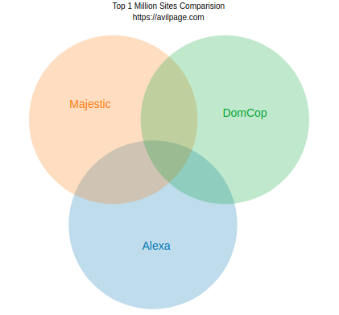

Alexa vs Domcop vs Majestic - Top Million Sites
Introduction
Alexa1, Domcop2(based on CommonCrawl3 data) Majestic4 & provide top 1 million popular websites based on their analytics. In this article we will download this data and compare them using Linux command line tools.
Collecting data
Let's download data from above sources and extract domain names. The data format is different for each source. We can use awk tool to extract domains column from the source. After extracting data, sort it and save it to a file.
Extracting domains from alexa.
# alexa $ wget http://s3.amazonaws.com/alexa-static/top-1m.csv.zip $ unzip top-1m.csv.zip # data sorted by ranking $ head -n 5 top-1m.csv 1,google.com 2,youtube.com 3,facebook.com 4,baidu.com 5,wikipedia.org $ awk -F "," '{print $2}' top-1m.csv | sort > alexa # domains after sorting alphabetically $ head -n 5 alexa 00000.life 00-000.pl 00004.tel 00008888.tumblr.com 0002rick.tumblr.com
Extracting domain names from domcop.
# Domcop $ wget https://www.domcop.com/files/top/top10milliondomains.csv.zip $ unzip top10milliondomains.csv.zip # data sorted by ranking $ head -n 5 top10milliondomains.csv "Rank","Domain","Open Page Rank" "1","fonts.googleapis.com","10.00" "2","facebook.com","10.00" "3","youtube.com","10.00" "4","twitter.com","10.00" $ awk -F "\"*,\"*" '{if(NR>1)print $2}' top10milliondomains.csv.zip | sort > domcop # domains after sorting alphabetically $ head -n 5 domcop 00000000b.com 000000book.com 0000180.fortunecity.com 000139418.wixsite.com 000fashions.blogspot.com
Extracting domain names from majestic.
# Majestic $ wget http://downloads.majestic.com/majestic_million.csv # data sorted by ranking $ head -n 5 majestic_million.csv GlobalRank,TldRank,Domain,TLD,RefSubNets,RefIPs,IDN_Domain,IDN_TLD,PrevGlobalRank,PrevTldRank,PrevRefSubNets,PrevRefIPs 1,1,google.com,com,474277,3016409,google.com,com,1,1,474577,3012875 2,2,facebook.com,com,462854,3093315,facebook.com,com,2,2,462860,3090006 3,3,youtube.com,com,422434,2504924,youtube.com,com,3,3,422377,2501555 4,4,twitter.com,com,412950,2497935,twitter.com,com,4,4,413220,2495261 $ awk -F "\"*,\"*" '{if(NR>1)print $2}' majestic_million.csv | sort > majestic # domains after sorting alphabetically $ head -n 5 majestic 00000.xn--p1ai 0000666.com 0000.jp 0000www.com 0000.xn--p1ai
Comparing Data
We have collected and extracted domains from above sources. Let's compare the domains to see how similar they are using comm tool.
$ comm -123 alexa domcop --total 871851 871851 128149 total $ comm -123 alexa majestic --total 788454 788454 211546 total $ comm -123 domcop majestic --total 784388 784388 215612 total
$ comm -12 alexa domcop | comm -123 - majestic --total 31314 903165 96835 total
So, only 96,835(9.6%) domains are common between all the datasets and the overlap between any two sources is ~20%. Here is a venn diagram showing the overlap between them.

Conclusion
We have collected data from alexa, domcorp & majestic, extracted domains from it and observed that there is only a small overlap between them.

Chillar Anand
A blog about python, careers & life.
To contact me, send a message here.